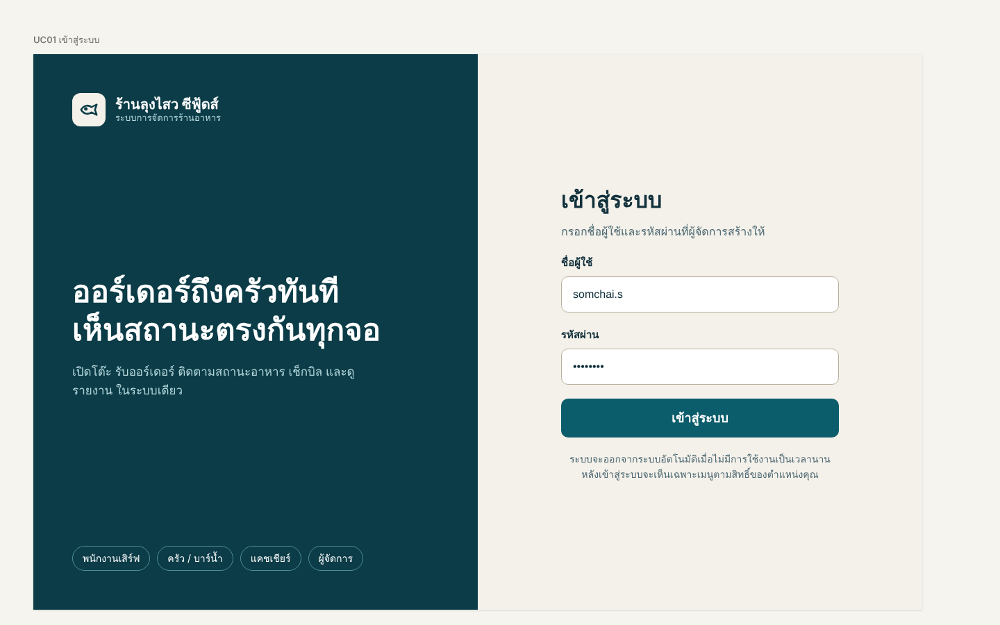

ออกแบบ UI ระบบร้านลุงไสว ซีฟู้ดส์
ออกแบบหน้าจอระบบจัดการร้านอาหาร ตั้งแต่เข้าสู่ระบบ รับออร์เดอร์ ไปจนถึงติดตามสถานะอาหาร โดยแยกเมนูตามหน้าที่ของพนักงานเสิร์ฟ ครัว/บาร์น้ำ แคชเชียร์ และผู้จัดการ
ผลงานที่ผมออกแบบและลงมือทำ

ออกแบบหน้าจอระบบจัดการร้านอาหาร ตั้งแต่เข้าสู่ระบบ รับออร์เดอร์ ไปจนถึงติดตามสถานะอาหาร โดยแยกเมนูตามหน้าที่ของพนักงานเสิร์ฟ ครัว/บาร์น้ำ แคชเชียร์ และผู้จัดการ